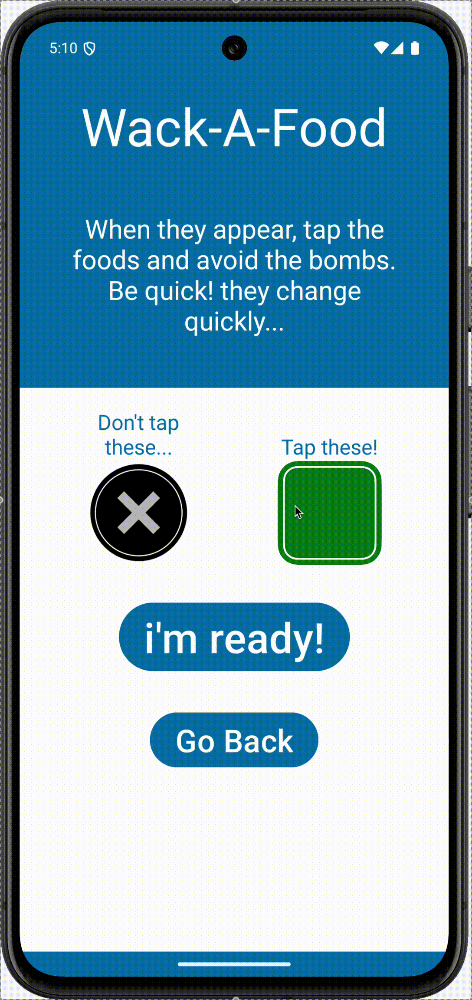
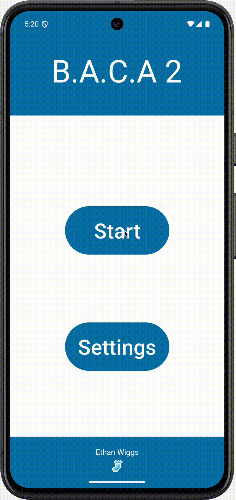

A mobile game and utility that makes the stress of meal planning easy and fun. By playing three rounds of mini-games, you can collect ingredients. After playing, a meal using the ingreadients is generated, and you can choose to cook it or not. The game features music composed by myself using Logic Pro
The mini-games are fast paced and fun. Designed for mobile and touch interfaces specifically.
The app was my first experiment transitioning smoothly between pages in a mobile context. This app uses a simple loading indicator to hide the transition occuring underneath.
